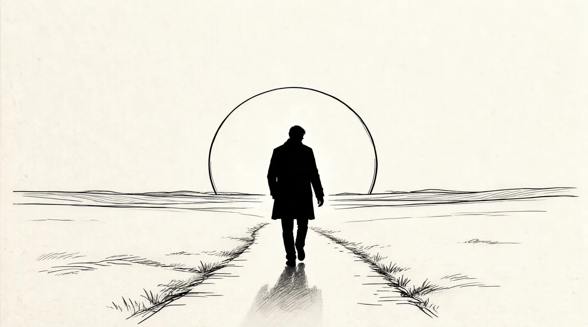

第32章 简单、安全、有利润且令人愉悦

1968年1月，巴菲特召集追随格雷厄姆的同伴们——这是他第一次将他们聚集在一起——在股票市场变疯狂的过程中间举行一个信徒式的会议。“在过去几年里，他们的态度发生了巨大的变化，我认为正在拉霍亚集合的这帮人就是留下来的守护者。”1他写道。他邀请了格雷厄姆以前的学生比尔·鲁安、沃尔特·施洛斯、马歇尔·温伯格、杰克·亚历山大和汤姆·纳普。他还邀请了查理·芒格（他已经把芒格介绍给格雷厄姆）、芒格的合伙人罗伊·托尔斯以及杰克·亚历山大的合伙人巴迪·福克斯。已经离开芒格的合伙公司而成为特雷迪–布朗公司合伙人的埃德·安德森也在邀请之列，此外还有桑迪·戈特斯曼，关于他，巴菲特告诉格雷厄姆，他是“我的一个好朋友，而且是你的仰慕者”。最后，巴菲特说：“我想你也许记得亨利·勃兰特，他和我们合作得很紧密。”2
巴菲特在类似桑伯恩地图等交易中的合作者，同时也是他婚礼上的伴郎弗雷德·斯坦贝克太忙了没能参加。沃伦结束了哥伦比亚大学的学习几年后，和1949年“内布拉斯加小姐”范尼塔·梅·布朗在纽约重聚，一起吃饭。他们分别带上了苏珊和弗雷德，把这次晚餐变成了两对夫妻的约会。此前，弗雷德通过沃伦至少和范尼塔见过一次面。她那时叫范尼塔·梅·布朗·纳德兰德，因为她曾和纳德兰德家族的成员有过一次短暂的婚姻。这个家族拥有剧院，是美国娱乐界的一分子。晚餐过后，沃伦最内向的朋友弗雷德，就如另外一个朋友评价的那样，“任她摆布”，这似乎也证明了古老的格言“异性相吸”。起初，他们俩的结合看起来就像是沃伦在哥伦比亚学习生涯的迷人后记——从那个时期带入巴菲特夫妇圈子里的一对佳偶。他确实有安排朋友生活的倾向，要求他们和他合伙，把他们安排在自己公司的董事会，通过各种各样的纽带把他们卷进自己的生活。两个朋友的结合感觉上像是对他的赞扬，不过后来证实这是弗雷德一生中作过的最糟糕的决定。
弗雷德和范尼塔一直住在北卡罗来纳州的萨利斯伯里，那是他长大的地方，而且他的家族在那里创立了“SnapBackwithStanback”头痛药公司。现在弗雷德自己也需要头痛药，因为他正努力从这桩婚姻中抽身出来。范尼塔已经在小小的萨利斯伯里扎根，而且留在那儿用尽她的创造力来让弗雷德苦恼，他们还在法庭上唇枪舌剑。因此，和其他的格雷厄姆追随者不一样，弗雷德对股票市场的兴趣暂时被转移了。同时，市场正变得越来越没有吸引力：上亿美元被人们用来搭所谓专家的便车而涌进市场，其实那些专家自己也没有几年的挣钱经验。超过50只新的投资基金进入市场，还有将近65只正准备进场。3对广大范围内的个人而言，持有股票成为一种时尚，这在美国历史上是第一次。4巴菲特形容这段时期和“不断扩散的连锁信”甚至和“躁狂症”相似，大多数人“满怀希望、轻信和贪婪，找个理由就能相信”。5
在一个仍然通过纸质票据进行交易，需要运送股票凭证的业务里，交易量已经达到文书工作快把市场压垮的水平。大量的指令被重复或者从未执行，票据放错，要不就扔在垃圾堆里，文件室的股票凭证不见了，推测是被偷了，还有谣言说黑手党已经潜入市场。各种各样的改革在1967年和1968年推进，自动化和电脑化交易系统正在竭力赶上。其中最重要的措施之一是关闭旧的“私下出售”市场。全美证券商协会宣布准备上马一个叫作“纳斯达克”的新系统，为小股票进行报价服务。6大多数不在交易所上市的公司的价格不再出现在刚印出数据就不新鲜的粉单上，而是公布出来，并且根据变化随时进行电子更新。做市商们必须站在他们张贴的报价旁，亲手更新。任何有知识、擅长杀价且意志坚强的交易者都不会喜欢这个新系统。在一个已经很困难的市场里面，这将让巴菲特的工作更加艰难。
沃伦给每一位将到拉霍亚的格雷厄姆追随者发出了指引。“除了1934年版的《证券分析》一书以外，请不要多带任何东西。”他写道。7不管他们年龄如何，妻子一律留在家里。
在他的信里，巴菲特提醒他们到这儿来是听格雷厄姆这个伟人，而不是另外什么人的教诲的。这个团队中的几个人——芒格、安德森、鲁安——更健谈。当然，当说到投资的时候，没有人比巴菲特自己更健谈。37岁的他已经有资格称呼他以前的老师“本”（本杰明的昵称）。不过有时他仍然会忘记而称呼“格雷厄姆先生”。因此他必须在一定程度上提醒自己不要总想着去做课堂上最好的学生。
得到这样的指示后，这12个格雷厄姆的崇拜者在科罗拉多酒店聚齐，海湾对面就是圣迭戈。沃伦原本希望在便宜很多的地点如假日酒店会面。他确信，这个团队的人都明白选择这个度假胜地，来奢侈享受这里的粉红和白色相间的维多利亚甜食是格雷厄姆的主意。
当这12个人抵达圣迭戈时，巨大的风暴已经来临，雨水如鞭，大海翻腾，但是没有人介意，他们来这儿是谈股票的。巴菲特非常骄傲自己能给老师设计一个表示敬意的礼物，而且能有机会给他的新朋友们炫耀本杰明·格雷厄姆的智慧。格雷厄姆来迟了，可毕竟曾经是老师，他一到这儿，立刻给了他们一场测验。
在任何情况下，听格雷厄姆说话都是一件痛苦的事情。每一个句子都很复杂且用了典故。他给他们的测验也一样。“虽然有些复杂,但不是特别复杂——有些是有关法国故事的，或者类似的。不过你可能知道其中一些答案。”巴菲特说。
他们却不这么认为，只有罗伊·托尔斯做对了超过半数的题目。除了有两题他确切知道不正确以外，其他每道题他都回答“正确”，最后他得了11分，总分20分。最后他们才知道这个“小测验”原来是格雷厄姆教学技巧中的一个，是为了告诉人们，即使一个看起来容易的游戏也会被操纵。后来，巴菲特有句名言：知道一个聪明的家伙洗牌作弊并不是必要的保护措施。
在会议的其他时间里，格雷厄姆带着困惑忍受着讨论股票发起、制造业绩、伪造账目、机构投机和“连锁信并购综合征”8。不过他再也不参与了；相反，他想猜谜语，而且会饶有兴致地加入脑筋急转弯、词汇或者数字游戏。
然而，巴菲特和以往一样投入，尽管他在1967年10月给合伙人的信中写道，从现在起，他不再把自己局限在“简单、安全、有利润且令人愉悦”的活动里。他从圣迭戈返回奥马哈后，把精力都放在合伙公司的问题上。他需要让合伙人知道他们拥有的一些业务并不怎么样。他在接下来的两封信中给了些微妙的暗示。1967年他详细地描述了纺织业的艰辛，而1968年他没有进一步提及这门业务，尽管伯克希尔工厂的前景和收入并没有改善。多元零售公司的收益由于霍克希尔德–科恩公司的拖累而下降。9然而，巴菲特还是没有采取符合逻辑的下一步，出售伯克希尔–哈撒韦或者霍克希尔德–科恩公司。
这里，他的商业直觉和他身上的一些其他特点有冲突：收账的迫切愿望、被人喜欢的需要、过分避免冲突。在1968年给合伙人的信中，他用错综复杂的解释说明了他的想法：“在生意中，当我和自己喜欢的人打交道时，我发现这对我是种激励（什么事情不这样呢？），而且能获得相宜的资本总体回报（比如10%~20%），为了多挣那么几个百分点而仓促行事是愚蠢的。而且对我而言，在一个合理的回报率下和高品位的人建立愉悦的私人关系，比在更高的回报率下面对可能的愤怒甚至还要糟糕的情况，要明智得多。”10
不断增多的巴菲特观察家们也许读到这些话很惊讶。他用“总”回报衡量，允许其中一些生意出现比平均水平差的情况。看到巴菲特——曾经像紧紧捏住牙膏管挤牙膏一样，从1美元里要挤出1个百分点的最后1/10这样一个人——对“那么几个百分点”轻蔑地表示不屑是令人震惊的。
可是他的业绩表现让抱怨的人闭上了嘴，因为即使调低了预期，他仍然继续超越了自我。合伙公司自成立12年以来，年平均回报超过31%，而道琼斯指数只有9%。巴菲特一直强调的安全边际总是以对他有利的方式和机会相切。11安全边际对他的平均成功率的累积效应意味着，投资道琼斯指数的1000美元现在只值2857美元，而他已经达到这个数字的将近10倍——27106美元。现在，巴菲特的合伙人相信他给的总是比他承诺的要多。1968年，巴菲特证明了这种业绩表现的可预测性和确定性，而在这乱哄哄的一年里，学生们差点儿接管并关闭了哥伦比亚大学，示威游行的嬉皮士变得更好战，而激进分子差点儿提名一头猪当总统。12
不过到了1968年的中期，巴菲特决定抛弃棘手的伯克希尔–哈撒韦——既不简单、安全、有利润，也不令人愉悦的公司——以及不幸的纺织工人。他提出把公司卖给芒格和戈特斯曼。他们来到奥马哈拜访并进行商讨。但是，经过三天的讨论，芒格和戈特斯曼谁都不想买这家巴菲特认为自己没有了它反而能生活得更好的公司。他无法摆脱伯克希尔–哈撒韦。
因为服装部和梭箱织机部不能自给自足，需要花不少钱才能继续经营下去。巴菲特被迫采取行动。对他来说，在没有任何回报希望的前提下配置资本是很大的罪过。他告诉肯·蔡斯该怎么办。蔡斯失望了，不过他还是听从指示，关闭了这两个部门。13巴菲特仍然不参与这整个过程。
因此，他现在拥有的是一个有两项业务的合伙公司，一项成功——国民赔偿公司，一项失败——伯克希尔–哈撒韦，加上多元零售公司80%的股份,当然,还有广大范围内的其他公司的股份。随着1968年一天天过去，市场中的边缘股票开始下跌；投资者们集中追逐最大、最安全的公司股票。事实上，巴菲特自己也开始购买最平淡无奇、最受欢迎但尚属合理定价的股票：1800万美元的AT&T公司，960万美元的古德里奇公司，840万美元的AMK集团（后来的“联合商标”），870万美元的琼斯与拉夫林钢铁公司。但最重要的是，他一直在积累更多的伯克希尔–哈撒韦股票——尽管他自己有不购买业绩糟糕股票的原则,尽管这个纺织生意已经深陷泥沼。而在不久之前，他还试图把它卖给芒格和戈特斯曼，但是既然卖不掉，他似乎又想拥有他能弄到的所有股票。
他和芒格还发现了另一个他们认为有希望的公司，并且正在尽他们所能地买进。这就是蓝筹印花，一个经营印花的公司。他们两个将分别或者一起购买，过了一段时间以后，这家公司将戏剧性地重塑这两个男人的事业。
印花是一种营销赠品。零售商们会将之连同找零一起交给客户。顾客会把这些印花放入抽屉，贴到小册子里。兑换的时候，只要有足够数量的小册子就可以买回来一个烤炉、一根钓鱼竿，或者一副绳球套装。积攒印花带来的小小激动属于一个正在消失的世界：一个节约的世界，一个害怕债务的世界，人们把这些“免费的礼物”看成是对不怕麻烦地收集、保存印花并且从不浪费的奖赏。14
不过印花并不是真正免费。15商店支付印花的钱因而会相应提高商品的价格。如果不算加州，印花业的全美领先企业是斯佩雷与哈钦森公司。在加州，一批连锁店成立了自己的印花公司——蓝筹印花公司，并以折扣价卖给自己印花，从而把斯佩雷与哈钦森公司的绿色印花排除在外。16蓝筹印花公司是典型的垄断经营。
如果你让所有主要的石油公司和食品杂货商都派发一种印花，这就像垄断。人们会不要找零但会拿上印花。殡仪业者也派发印花，妓女们也派发印花。我一直在想，最有趣的事情莫过于妓院老鸨对一个女孩说：“从现在起，你最好发双份印花，甜心。”印花到处存在。每个人都有，人们甚至仿制它们。
1963年，司法部就贸易限制和在加利福尼亚州垄断印花业务而对蓝筹印花公司提起诉讼。17斯佩雷与哈钦森公司也起诉它。当时股票不景气，已经成立自己的合伙公司——太平洋合伙公司的里克·格林注意到蓝筹印花公司并且告诉了芒格。巴菲特也注意到了。“蓝筹印花公司并没有完美的理念。”查理·芒格承认，不过他们都决定下一个适当的赌注，赌蓝筹印花公司能够走出目前的困境——但斯佩雷与哈钦森公司的法律诉讼是最大的威胁。
他们看中了这家公司，因为它有“浮存金”。印花是预先付过款的，而奖品在之后兑换。在这期间，蓝筹印花公司可以使用这笔钱，有时可用好几年。巴菲特第一次接触这个诱人的概念是通过买GEICO股票，这也是他要拥有国民赔偿公司的部分原因。保险商在被索赔之前能先拿到保费，这意味着他们可以拿这笔钱进行稳定且不断增长的浮存金投资。对于像巴菲特这种对自己的投资能力非常自信的人而言，这样的生意实在诱人。
很多行业都有浮存金。银行的存款也是浮存金。顾客们通常会认为银行把他们的现金放在一个安全的地方是帮了他们的忙，然而银行会把这些存款以他们所能收的最高利率放贷，赚取利润。“浮存金”就是这么回事。
巴菲特、芒格和格林知道如何发现投资机会。如果有人给他们印花，他们会把这个情况倒过来想：“嗯，也许拥有印花公司会更好。”然后他们会搞清楚为什么。他们再也不会花费时间存印花来换取木炭火盆或绳球套装，就和他们不会穿着睡衣去办公室一样。甚至巴菲特——儿童时期是个印花收集者，有时还会梦到数印花，在他的地下室里还有一堆令人伤感的蓝鹰邮票——也愿意拥有该公司的股票，而不是收集蓝筹印花。
1968年，蓝筹印花公司开始解决这场由竞争者提起的诉讼。18它和司法部达成“和解”，拥有这家公司的食品杂货连锁店将向那些派发印花的零售商出售公司45%的股份。19为了从食品杂货商那里转移更多的控制权——正是他们给了这家公司不够完美的概念——司法部要求这家公司为它1/3的印花业务另外再找一个买主。然而，看起来蓝筹印花公司已经在这场法律争端中挺了过来。20
芒格的合伙公司已经买了两万股蓝筹印花公司股票，格林买的数量也差不多。在这个过程中，芒格表现出的对这家公司专有权的态度和巴菲特对伯克希尔–哈撒韦的态度如出一辙。他警告其他人离它远点儿。“我们不希望任何人买蓝筹印花公司，”他告诉人们，“我们不希望别人买这只股票。”21
随着市场的上扬，巴菲特把合伙公司的临时现金头寸增加至数千万美元，尽管他还在大量购买股票。他的合伙公司从幸运超级市场和市场篮子公司接收了蓝筹印花公司的股票，另外还有亚历山大市场拥有的股份。然而，他还在接下来的几个月里继续买进，直到合伙公司拥有超过7万股。他也为国民赔偿公司和多元零售公司买了斯里夫提马特商场所持股票的5%，它是蓝筹印花公司最大的股东之一。巴菲特算好了，他最终能让斯里夫提马特商场用蓝筹印花公司的股票换自己的股票。幸运的是，他们主要是基于斯佩雷与哈钦森公司的法律诉讼能和解而下的赌注——否则，时间上的安排和配合将是可怕的。
就在巴菲特、芒格和格林投身于蓝筹印花公司时，公司稳步增长的销售已经到了强弩之末。妇女们开始对坐在家里往小册子里贴印花失去了兴趣。快速发展的妇女解放运动意味着她们能利用时间干更好的事情，也意味着更多的钱以及如果她们想要一个电动搅拌器或一个瑞士火锅套装，就能买下它们，而不是攒印花来换。社会角色和惯例已经颠倒，传统文化被蔑视，以致年轻人断言：“不要相信任何30岁以上的人。”38岁的巴菲特并没有觉得自己老了——他从不觉得自己老——但是“从哲学上说，我是在一个老年人病房里”。他写信告诉合伙人。22他已经和现代文化与金融活动不合拍了。
1968年在巴黎举行的越南和平谈判的前景启动了市场又一轮喧闹欢腾的反弹。尽管巴菲特为自己骄傲，因为他用很小的风险，培养、照料自己的合伙公司，将之从7个投资人、10.5万美元的资金发展到超过300人、1.05亿美元的资金，但他已经成为市场里的长者，在那些年轻的江湖艺人们面前似乎黯然失色了。他们能用耀眼的数字让几年的价值闪光，会在几乎一夜之间让新的投资者给他们5亿美元。
说到那些正在形成的新科技公司，他似乎显得特别过时，而且处之泰然。他出席格林奈尔学院的会议时，发现学校的理事朋友鲍勃·诺伊斯渴望离开仙童半导体公司。诺伊斯、戈登·摩尔（公司的研发总监）和公司研发部的副总监安迪·格鲁夫基于一个把电路科技延伸至“更高的集成水平”的朦胧计划，决定在加利福尼亚州的山景城成立一家新公司。23罗森菲尔德和学校的捐赠基金都各自表示要投资10万美元，还有几十个人帮助为新公司筹集了250万美元——这家公司很快被命名为“英特尔”（Intel），是“集成电子”（IntegratedElectronics）的缩写。
巴菲特一直以来对科技股存有偏见，因为他觉得这样的投资没有安全边际。几年以前的1957年，他叔叔弗雷德·巴菲特的妻子凯蒂某一天带着一个问题来到沃伦家——她和弗雷德应不应该投资她的兄弟比尔的新公司？比尔·诺里斯离开了雷明顿–蓝德公司（雷明顿–蓝德公司后来和斯伯利电子公司合并，成为斯伯利–蓝德公司，接着，于1986年和巴勒斯合并，成为尤利西斯公司）的UNIVAC计算机部门，准备创建一家名为“控制数据”的公司和IBM竞争。
沃伦吓了一跳。“比利认为雷明顿–蓝德公司落后于IBM。我认为他疯了。他离开雷明顿–蓝德公司时，有6个小孩，更不用说有钱了。我认为比利离开雷明顿–蓝德公司也不可能变得富有。我想他离开只是因为他感觉不得志。每件事情都必须去纽约得到批准而后再回来。凯蒂婶婶和弗雷德叔叔想在公司初期投资。比利没有钱。从某种意义上说，没有人真正有钱。”是的，除了巴菲特和苏珊。“如果我愿意，我应该可以为它提供一半的资金。但是我非常不看好它，我告诉他们，‘这个项目对我而言没什么价值。谁还需要另外一家计算机公司呢？’”24
但是因为比利是凯蒂的兄弟，这一次，她和弗雷德不听沃伦的建议投资了400美元，以16美分一股的价格买了那些股票。25
这个控制数据公司给投资者的回报并没有改变巴菲特对技术的观点。同时期创建的其他许多科技公司已经失败了。然而出于对罗森菲尔德的尊敬或者出于别的什么原因，巴菲特为格林奈尔学院签署了一项技术投资。26“我们在赌骑师，而不是在赌马”，他就是这么看待它的。27不过，更为重要的是，罗森菲尔德为大学的投资提供担保，这提供了安全边际。尽管巴菲特钦佩诺伊斯，他也没有为合伙公司买进英特尔的股票，从而错过了他生命中最重要的投资机会之一。虽然他在困难的环境中已经降低了投资标准——还会再这么做——而他永远都不会作的妥协就是放弃他的安全边际。正是这个特别的品质——如果他不能约束风险，那就会放弃可能的财富——才让他成为沃伦·巴菲特。
但是，现在对他而言，整个市场开始看起来都像英特尔。他在1968年年末的信中清醒地评估说，目前的投资想法正处于低谷。28“怀旧再也不是以前那个样子了。”他总结道。
正如他后来解释的：“这是一个有好几万亿美元的市场，然而我却找不到聪明地投资1.05亿美元的办法。我知道在一个我认为自己不能做得很好，或者我不得不去做好的环境里，我是不想去管理其他人的钱的。”
他的这个态度和1962年时显著不同，当时市场也是同样在飞涨。两次他都为之叹息。但那时他竭尽全力筹集资金，掩盖了他不能让钱工作的无力。
合伙人被他严厉的措辞和他为他们挣钱的方式之间的反差搞得一头雾水。一些人开始用几乎超常的信心来信任他。巴菲特这种令人沮丧的预测越准，他本人就越具有传奇性。
[1]连锁信，通常指在一封信里写有恶毒的诅咒，收信人必须转发给他人，否则就会如何如何。——编者注